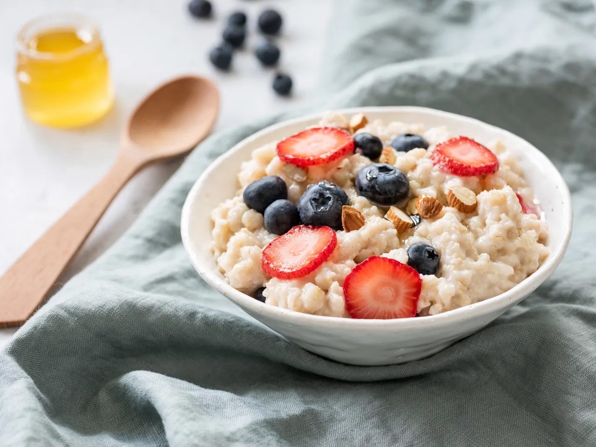

Hot Oats
(And How A Scale Can Help You Get It "Right")

How do I make a bowl of hot oats? By following the basic recipe often found directly on the product container. It's simple enough, but what if you want them to taste good and to consistently taste the same every time? The following recipe will hopefully help you accomplish just that.
Well, how exactly would I make hot oats consistently? While you can use volumetric measurements for dry and liquid ingredients to make oatmeal out of dried oats, I highly recommend learning through the use of a scale (my current tool of choice is a Hario V60 Metal Drip Scale). From my perspective, It's easy to overshoot or undershoot things like fats, powders, and sugars. Sometimes the food will be delicious and other times it'll feel like it needs something more. To reduce the guesswork for someone learning to cook for their first time, a scale can help create consistency and reduce the frustration of troubleshooting failures when following online recipes. For example, it's often assumed that people naturally know to aerate their flour before scooping or packing down their brown sugar once in the measuring cup. Oftentimes you'll see people complaining about recipes not working out, but it's likely due to being unable to recreate the exact conditions that worked for the author. This could cause nervous new cooks to quit before they even got the chance at success when following recipes. While some people can do everything by eye, that ability is most often earned through practice and repitition. My aim isn't to force you to weigh everything at all times for the rest of your life, but to do it on the first few tries to get the hang of the author's intentions. Thereafter, you can make adjustments to the method you see here according to your style of cooking and taste.
Consider this guide not just for how to make yourself a hot bowl of oats, but for how to use a scale as well. Keep in mind that learning how to use a scale can drastically reduce the amount of dishes you have to clean at the end of the process.
Ingredients
- 280g Water
- 1/4 teaspoon Diamond Crystal Kosher Salt, or possibly less if using other types of salt
- 80g Rolled Oats
- 45-60g Dried Figs
- 20g Honey
- 7g Unsalted Butter
Tools
- Kitchen Scale with grams option
- Small Pot with a Lid, enough to contain this serving size of oats and the water it needs to cook
- Bowl
- Spoon
- Knife
- Small Cutting Board, or a flat plate if you don't have one yet
- Silicone Mat, or any other heatproof slab, or a plate that is appropriate to the size of the bowl you're using
Tips Before Starting
- Turn off the scale when not in use to conserve its batteries.
- Avoid pushing hard into containers that are on the scale to avoid damaging the tool.
- DO NOT cut into ingredients while on the scale to avoid damaging your tool.
- If your scale doesn't measure in grams, you can still try this recipe, but you'll have to convert grams into ounces (28.3g per oz).
- You can use your pot lid if you want the water to boil faster, but for your first time I recommend not using one to give you time with preparation you will have to do during the process.
- Pay attention to the boiling pot of oats and the temperature of your cooking surface. When you understand your own stovetop and pot, you'll be able to know how low the burner needs to be to avoid boilover (and the messy cleanup to follow). On your first try, you'll have to watch a lot more. On subsequent tries, your increased sense of understanding will allow you to pay attention at the start, do other things while it cooks, then come back at the end do a cooked pot of oats.
- I specified the type of salt that I use because it's flakier/airier than other salt, so it'll taste less salty when compared to the same amount of other styles of Kosher or table salt. For example, 1/4 tsp of my choice of salt will be around 280mg of sodium, whereas the same measuring spoon of Morton Kosher Salt will be 480mg and Morton Iodized Table Salt will be 590mg. Please take care depending on the salt you have on hand as you can always add more, but you can't take away once it's in the food.
- If using salted butter instead of unsalted, add less salt then specified in the ingredients, or omit it completely, to compensate for the saltier fat being used.
- Different varieties of honey can be stiffer than others, such as some kinds of raw honey I prefer. Therefore, some are easier to spoon out of a jar, while others can drip off a spoon seemingly forever. Take it easy: go slow and steady. Don't rush into a mess that could take longer to clean than the time spent slowing down. This advice can be expanded to measuring other ingredients and activities like knife-work. Better to be slow and safe versus sorry.
Steps
- Measure the water into a small pot, add your salt, and bring to a boil in a small pot.
- In the meantime, we'll measure some ingredients:
- Place a bowl you want to eat from on the scale, turn it on (the scale should say 0g), then measure your dried oats. Put the bowl to the side.
- Place your cutting board on the scale, turn it on (again, the scale should say 0g), then add the dried figs until they reach the weight range. Put aside the cutting board. Thinly slice the dried fruit while you're waiting for the water to come to a boil.
- Once boiling, add the dry oats to the water and wait until it comes back to a boil. Cover the pot and reduce the heat, so it maintains a gentle simmer for around 12-15 minutes. Check periodically to keep it from getting too hot and foaming over into a mess you'll need to clean. On the other end, if it's too cold, it'll take longer to cook, so make sure it's simmering or you'll be waiting a while longer than necessary.
- While the oats cook, wipe the oat dust out of your bowl. There are a few ways you can measure the honey depending on its container (such as a jar vs a squeeze bottle):
- Place your opened jar of honey on the scale, then turn it on. Use a spoon to take out the specified amount into your bowl. Your scale should be registering into the negatives, so in this case, it will show -20g.
- Place your bowl on the scale with a spoon in it, then turn the scale on. Spoon some honey in from your jar and adjust if you need more or less in the bowl. Honey is sticky, so if you don't "0 out" the spoon with the bowl, you'll have leftover honey on your spoon that you'll either not want to entirely scrape off the spoon back into the container (with more tools like nonstick spatulas that you'll have to clean!) or you'll want to eat it (thereby consuming more sugar than necessary).
- If you are using a squeeze bottle of honey, you can place that on the scale, turn it on, then pick up the bottle to squirt into the bowl, while periodically checking how much honey left the bottle by placing it back on the scale after each squirt.
- Place the bowl on the scale, turn on, then squirt your squeeze bottle directly into it until it reaches the desired amount, taking care not to squeeze out too much and go over the amount needed.
- Similarly, we'll measure the butter to place into the bowl as well:
- Place the bowl on the scale, turn on, then add butter to it until the desired weight is reached.
- Place your butter container (or often a stick of butter in parchment paper or foil) on the scale, turn it on, then remove the container to cut into the butter until you've removed the appropriate amount, registering at -7g when the container is on the scale.
- Place the bowl on a silicone mat or some other heatproof object.
- After about 12 minutes, you can remove the pot cover and check the oats for doneness. More time for mushier food and less time for firmer textured grains. The oats should absorb most of the liquid, but if there is too much leftover, continue boiling until there's only a little left. You want some liquid because the residual heat will dry up your oats by the time you eat it. You can add more water if too dry. When you consider them done, add the cooked hot oats into the bowl.
- Stir with your spoon until the butter & honey are dissolved and well incorporated with your oats.
- Top with the thinly sliced figs.
- Eat and enjoy your meal! Take note of what you experienced when making it and how it tasted when you finally ate it.
- Adjust the base recipe to your needs for future reference.
Tips For After Your First Try
- The proportions for this ingredient list are based on my choice of oat brand's instructions for boiling oats on a stovetop with water and salt. I developed the amounts for fats and sugars based on the minimum amount required to make it taste good enough for me. For my own needs, I don't need to consume a whole day's worth of fat, sugar, or salt in one sitting when there are generally many meals involved in a day that need their own amounts to taste good. Your body will likely thank you in the future for not maximizing taste in all of your meals.
- You can use different fruits, sweeteners, and fats based on what you have on hand or what you prefer to consume. You may adjust the recipe by adding or replacing ingredients with others:
- Dried figs can be mixed or replaced with other dried fruits like dates, blueberries, cranberries, raisins, mulberries, etc. What you want to use may allow you to skip the cutting step entirely. You can even use fresh fruit if preferred, although I enjoy the convenience and taste of dried fruits for oatmeal.
- Honey can be replaced with sugar, brown sugar, agave, or any other sweetener.
- Butter can be mixed or replaced with something like coconut oil or peanut butter to introduce different flavor profiles. You can use something like a light olive oil in a pinch, but I highly recommend sticking to butter, coconut oil, or peanut butter for taste. As mentioned in Tips Before Starting, consider whether your fat (like butter or nut butters) already contains salt, so you don't overpower your dish with salty flavor.
- You can add nuts for some protein, but mind how much you add to avoid consuming too much fat or too many calories. This recipe is meant to not be a stomach bomb and to provide an allowance for being able to eat more fat in other meals you make/get throughout your day. Again, mind the saltiness of the nuts you add to avoid adding too much additional salt.
- Although they will require a different set of cooking instructions, you can expand with different kinds of grains. You can change from rolled oats to a different style like steel-cut oats. Furthermore, you can try something entirely different like buckwheat groats to establish a variety of hot grains you can make into a part of your diet. Consider the recipe on this page as a base method for hot grain bowls that are meant to be adjusted in many ways to provide variety as an escape from eating boredom.